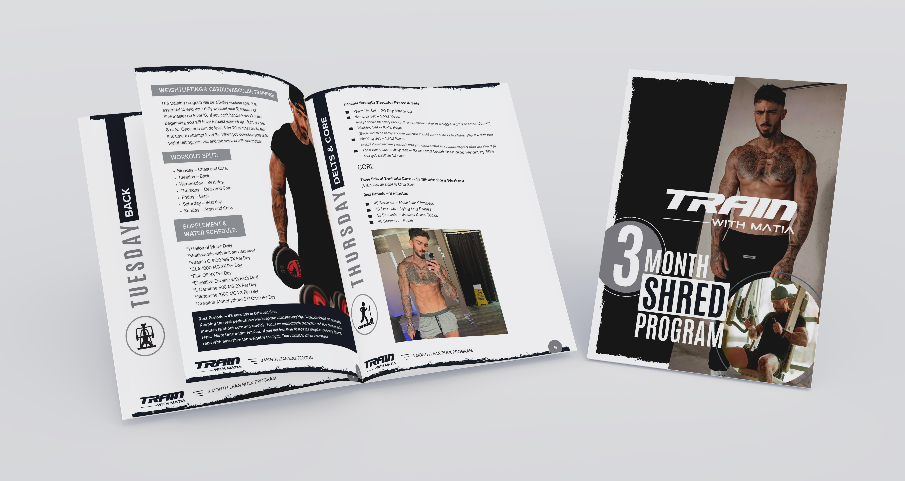
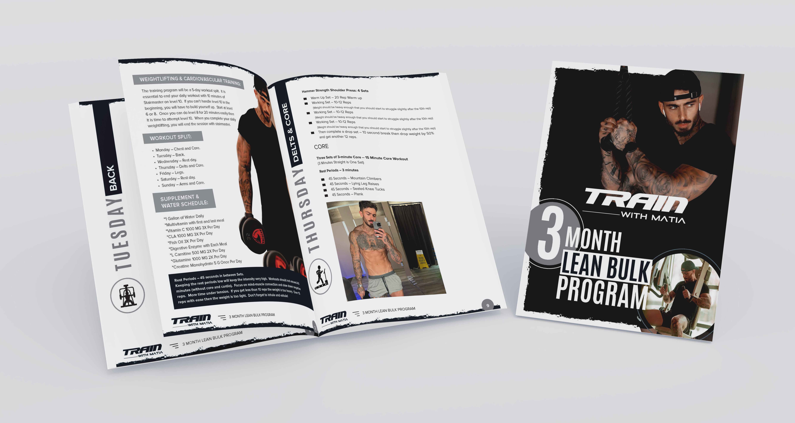

<aside class="callout" id="callout">
  <div class="text-vertical-center">
    <h1 style="font-size: 72px;" class="text-uppercase p-3">The Program</h1>
    
    
    <p class="about-me-paragraph">
      I offer two programs: 500 USD and 2000 USD for VIP - package includes 1 on 1 personal training. If you will be interested, we will discuss details on FaceTime.
    </p>

    <div class="card-deck text-dark">
      <div class="card">
        
        <div class="card-body">
          <h5 class="card-title" style="font-weight: 700;">Shred Program</h5>
          <p class="card-text">I will analyze your body type, daily activity, and
            stats to calculate the correct daily calorie intake
            and macros for your program. I will help you set
            up the MyFitnessPal app so you can enter your
            daily food intake and track your macros to hit
            the requirements. You will need to download the
            MyFitnessPal app on your phone. You can either
            follow a conventional strict diet and meal plan
            or use the IIFYM (If It Fits Your Macros) approach
            to reach your goals. It’s very important to hit
            the macros and fiber intake every day for the
            best results. I will provide you with a training,
            cardio and supplementation plan for the 3 month
            program. The stricter you adhere to the program
            the better the results will be.
          </p>
          <a href="https://form.jotform.com/220944908138259" class="btn btn-dark btn-lg rounded-pill" role="button">SIGN UP</a>
        </div>
      </div>

      <div class="card">
        
        <div class="card-body">
          <h5 class="card-title" style="font-weight: 700;">Lean Bulk Program</h5>
          <p class="card-text">I will analyze your body type, daily activity, and
            stats to calculate the correct daily calorie intake
            and macros for your program. I will help you set
            up the MyFitnessPal app so you can enter your
            daily food intake and track your macros to hit the
            requirements. You will need to download the
            MyFitnessPal app on your phone. You can either
            follow a conventional strict diet and meal plan
            or use the IIFYM (If It Fits Your Macros) approach
            to reach your goals. It’s very important to hit
            the macros and fiber intake every day for the
            best results. I will provide you with a training,
            cardio and supplementation plan for the 3 month
            program. The stricter you adhere to the program
            the better the results will be.
          </p>
          <a href="https://form.jotform.com/220944908138259" class="btn btn-dark btn-lg rounded-pill" role="button">SIGN UP</a>
        </div>  
      </div>
    </div>
    <br>&nbsp;<br>
  </div>
</aside>
